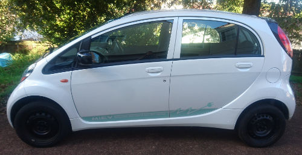
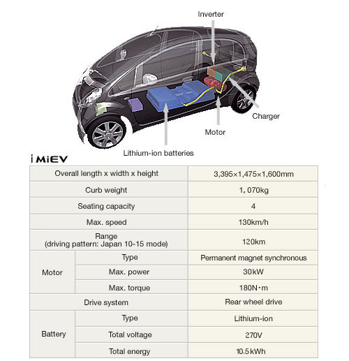

The purpose of this web page is to provide some basic information on the 'M Spec' variant of the
Mitsubishi i-MiEV electric car (if you want the data sheet of the G Spec variant, please go here).

The most unique thing about the 'M Spec' variant is that it has lithium titanate batteries.
The main advantages of this battery chemistry are longevity and a very fast charge rate.

For more info on all the variants of the Mitsubishi i-MiEV, this old Inside EVs article is a good read:
mitsubishi-improving-m-spec-i-miev-and-replacing-g-spec-with-x-spec-in-japan